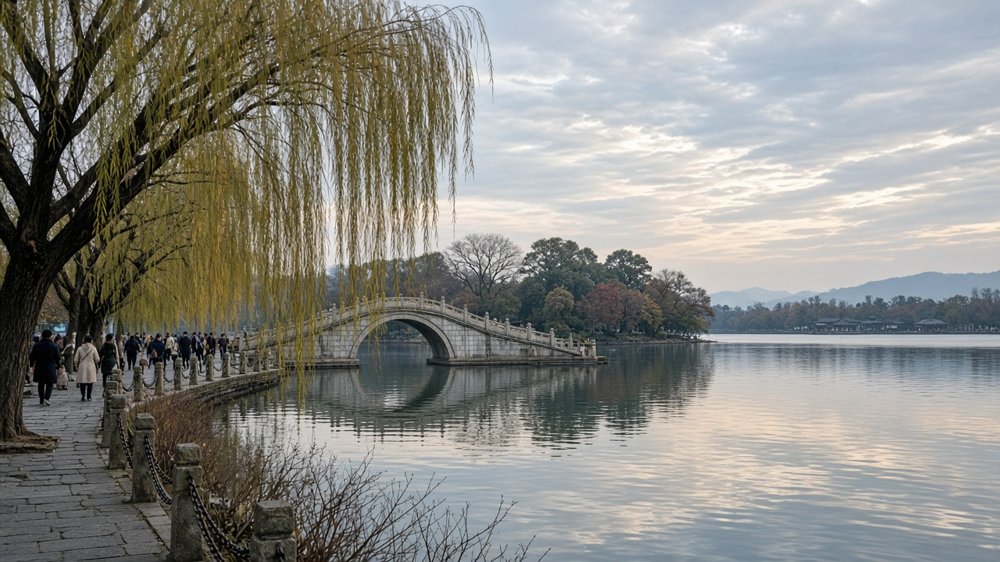
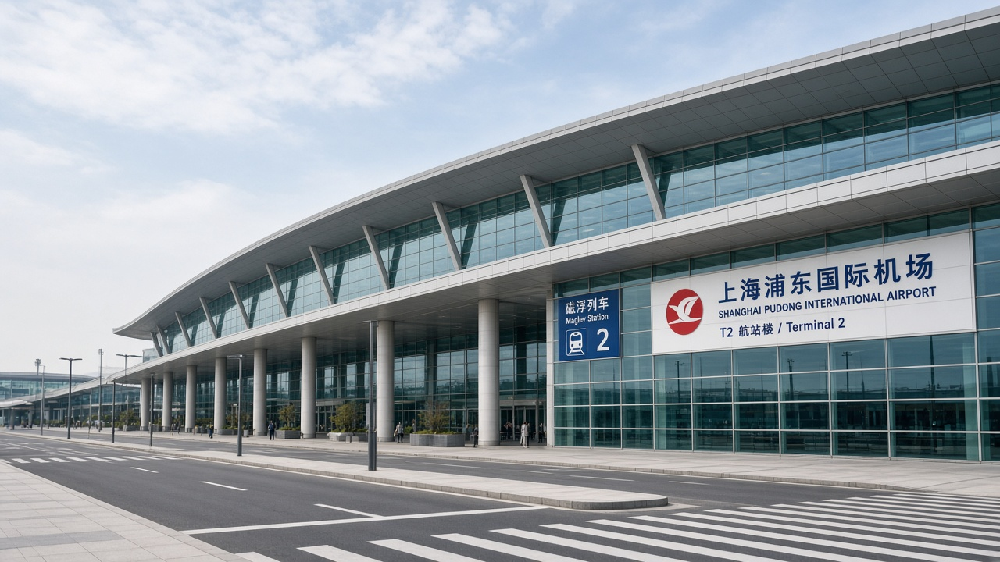
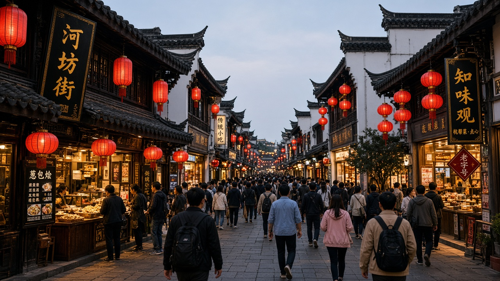
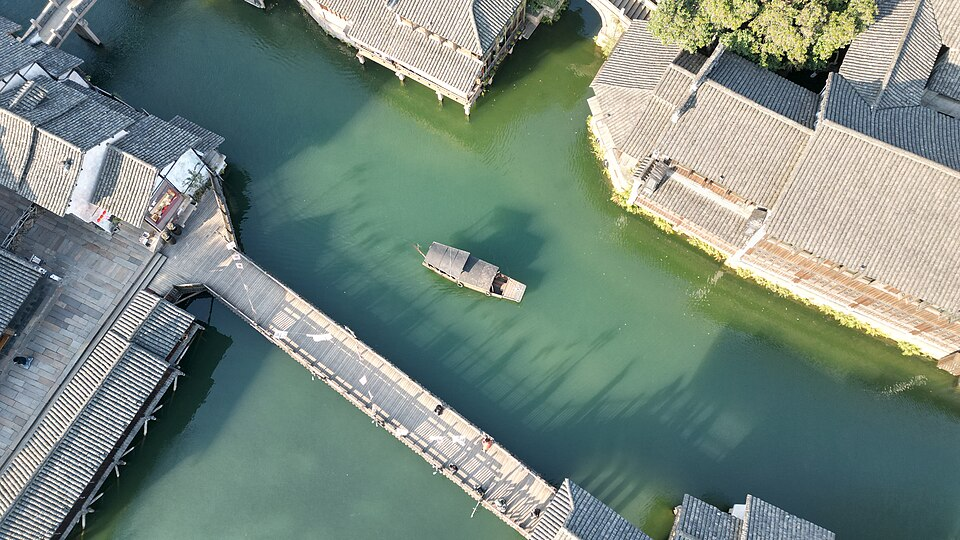
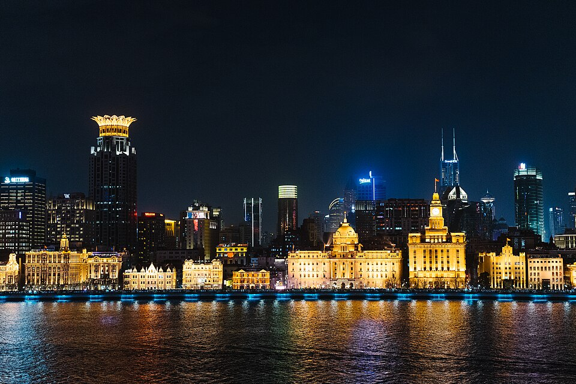
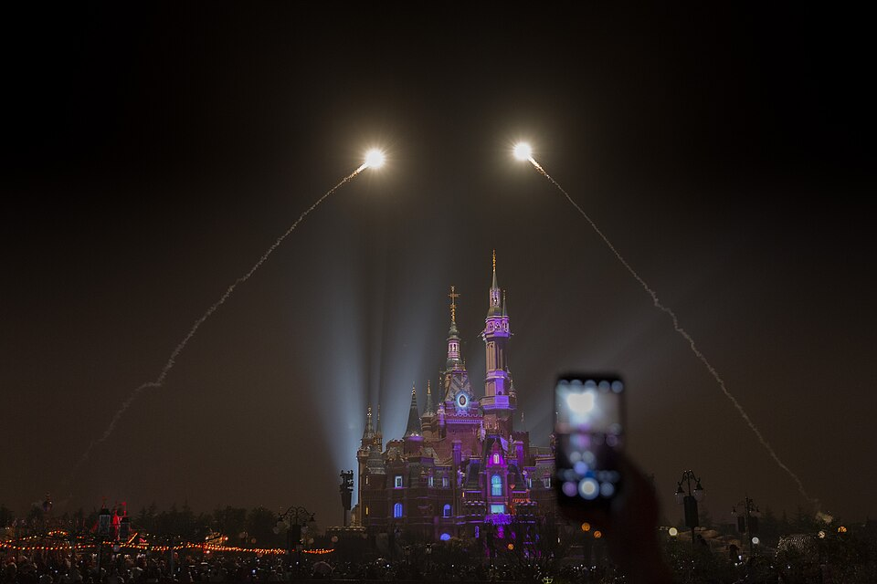
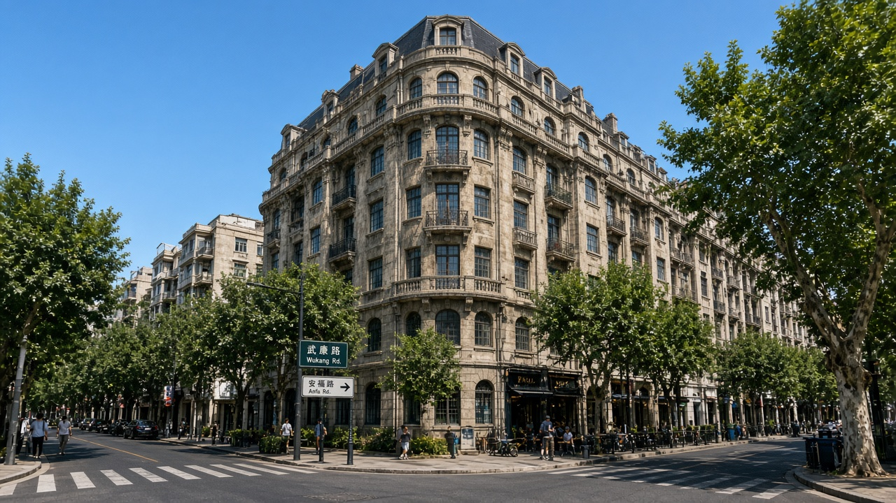

Hành trình 8 ngày 7 đêm: Hàng Châu (Hồ Tây) → Ô Trấn Tây Sách → Thượng Hải (Bến · Disney). Lịch trình cân bằng tham quan, ẩm thực và nhịp nghỉ — phù hợp cặp đôi, không kèm trẻ em.
Thêm vào màn hình chính để mở nhanh trên điện thoại.

Hàng Châu · Ô Trấn · Thượng Hải07–14/01/2027 · 2 khách · VietJet Deluxe
Hà Nội–Phố Đông–Hàng Châu–Ô Trấn–Thượng Hải–Hà Nội
NGÀY 0

7/1 thứ NămLịch trình bận rộn, di chuyển nhiều
Thời gianHoạt động — Hà Nội đến sân bay Phố Đông, không thuê khách sạn gần sân bay
Hà Nội đến sân bay Phố Đông, không thuê khách sạn gần sân bay
Thượng Hải Phố Đông · trên đường. Bay tối 07/01, đáp sáng 08/01 sân bay Phố Đông. Nhập cảnh xong ~03:00 bắt
xe buýt đêm, lên tàu Hàng Châu.
Chuyến bay đi · VietJet Air
VJ
VietJet AirDeluxe · 2 khách
VJ 6010
HAN
Nội Bài, Hà Nội
21:25
07/01/2027 · Thứ Năm
Bay đêm
PVG
Phố Đông T2
01:15
08/01/2027 · +1 ngày
Hạng
Deluxe
Nhà ga đến
PVG T2
Check-in
Trước 19:25
Giá tham khảo cả khứ hồi Deluxe: 10.560.000đ / 2 khách. Kiểm tra giờ bay lần cuối khi xuất vé.
Nhập cảnh sân bay Phố Đông, nhà ga 2
Xuống máy bay, hải quan, lấy vali. Lần đầu visa L thì chừa tới ~03:00.
Xe buýt đêm 守航夜宵线
Đón nhà ga 1 và nhà ga 2, nhà ga 2 hoạt động 23:03–05:33, đủ khách là đi, tối đa 30 phút có một chuyến
18–34 tệ/người, ~80 phút
Xuống đúng 虹桥枢纽东交通中心 — đừng ngủ quên
Đừng Didi sân bay Phố Đông đến Hồng Kiều đêm này: đắt, kẹt, dễ say xe
Chờ tàu Hồng Kiều
Ăn 7-Eleven hoặc FamilyMart, soi hành lý, kiểm hộ chiếu 45–60 phút. Đừng đặt chuyến 05:52 — chỉ cần nhập cảnh chậm một chút là kế hoạch domino đổ hết.
Chốt khung 06:20–06:45.
NGÀY 1
8/1 thứ SáuLịch trình bận rộn, di chuyển nhiềungủ sớm
Thời gianHoạt động — Hàng Châu · Hồ Tây, Thanh Hà Phường
Hàng Châu · Hồ Tây, Thanh Hà Phường
Tàu ~06:20–06:45 tới Hàng Châu Đông. Gửi vali, 14:00 nhận phòng. Sáng bờ đông, trưa cơm Hàng
Châu,
chiều phố cổ, tối IN77 rồi ngủ. Vũ Lâm để ngày mai.
20–30 tệ/xe. Tài xế hỏi 4 số cuối số điện thoại Alipay. Nhận phòng 14:00.
Hồ Tây bờ đông và Đoạn Kiều
Liễu Lãng Văn Oanh, cầu Tân Hoành Hà — miễn phí. Lạnh 1–8°C, mặc ấm
Đoạn Kiều gần quán 外婆家. Chụp từ trên cầu nhìn hồ
Đừng tham đi hết một vòng hồ, và cũng đừng cố nhét Linh Ẩn vào lịch. Đi chơi chứ không phải chạy KPI!
Trưa — cơm Hàng Châu
Ưu tiên 外婆家 北山路10号 (thịt Đông Pha, tôm Long Tĩnh). Phương án dự phòng: 新周记 十五奎巷3号 hoặc 绿茶
IN77.
Nhận phòng và Thanh Hà Phường
Tắm cho tỉnh. Phố cổ lên đèn ~17:00. Ăn vặt 定胜糕 / 桂花糕 / 糖葫芦. Khoan mua trà ở phố cổ nhé — để dành sang ngày 09/01, ghé 佑圣观路
mua sẽ hợp lý hơn. Lôi Phong Tháp để mai.
Tối — 绿茶 IN77 rồi ngủ
Gà nướng trà xanh, thịt Đông Pha và bánh kem. Đêm qua gần như thức trắng rồi, tối nay đừng cố kéo nhau sang Vũ Lâm nữa. Về ngủ mới là chân ái. khách sạn 2 đêm 08–10/01, giá
~643k/đêm.
NGÀY 2

9/1 thứ BảyLịch trình vừa phải
Thời gianHoạt động — Hàng Châu · lụa, trà, Vũ Lâm
Hàng Châu · lụa, trà, Vũ Lâm
Có thêm thời gian nghỉ ngơi. Sáng ngủ bù cho lại sức, sau đó đi mua lụa và trà. Trưa ăn 新周记, chiều chọn Lôi Phong hoặc Hồ Tân, tối mới thong thả sang Vũ Lâm thưởng thức món cua.
Lụa và trà
Đô Cẩm Sinh 龙游路48号, đi bộ 10–15 phút từ Định An. Trà Longjing: 佑圣观路, không mua trong phố cổ.
Trưa — 新周记 Cổ Lâu
十五奎巷3号. Đông Pha, tôm xì dầu. Phương án dự phòng 绿茶 / 外婆家 nếu xếp hàng lâu.
Lôi Phong Tháp hoặc Hồ Tân
option 雷峰塔 40 tệ, nhìn Hồ Tây. Không thì IN77 / CHAGEE. Linh Ẩn vẫn nằm ngoài kế hoạch — không cần cố đi cho đủ bộ.
Tối Vũ Lâm — 蟹叁寳
武林路129. 1 tô 88 tệ và tiểu long bao cho 2 người. Didi ~15–20 phút từ Định An.
NGÀY 3

10/1 Chủ nhậtLịch trình vừa phải
Thời gianHoạt động — Hàng Châu đến Ô Trấn Tây Sách
Hàng Châu đến Ô Trấn Tây Sách
Ăn sáng gần khách sạn, trưa nhẹ, 12:00 trả phòng. Đi xe khách thẳng tới Tây Sách — khỏi đổi tàu, khỏi gọi
Didi lòng vòng. Ở ngay trong trấn còn được miễn vé vào cửa, quá hời!
Ăn sáng và trả phòng
新丰小吃 gần khách sạn: tiểu long bao và sinh tiễn. Trưa nhẹ Qiantangli / mì. Lụa và trà đã làm 09/01. Trả phòng
12:00.
Didi/tàu điện ngầm 1 ga ra bến 城站.
Xe khách 城站 đến Tây Sách
Bến 杭州城站汽车客运站 (杭州市上城区环城东路12号杭州城站汽车客运站). Vé ghi 乌镇西栅, ~35–45 tệ, ~90 phút. Chốt 13:45, dự phòng
14:45.
Mua quầy bằng hộ chiếu; ứng dụng hay chỉ nhận CMND Trung Quốc. Tới trước 45 phút. Lịch mẫu — mua gần ngày. Hết chuyến
thì
sang bến ga Đông tầng G (杭州火车东站东广场G层北侧杭州长运公路汽车站). Xuống trung tâm khách, không cổng Nam.
Nhận phòng và Tây Sách lên đèn
Nhà dân trong trấn ~1.861k/đêm — giá tham khảo Trip.com
Đừng dại mua vé 150 tệ ở ngoài cổng nhé — đã ngủ trong trấn thì tận dụng quyền lợi miễn vé!
Nhất định nên trải nghiệm: thuyền Tây Sách ~60 tệ lúc hoàng hôn
Đền Nguyệt Lão và cây Phu Thê 20 tệ nếu muốn
Tối: vịt quay 大茶饭 hoặc mì cừu 书生灯面
NGÀY 4

11/1 thứ HaiLịch trình vừa phải
Thời gianHoạt động — Ô Trấn đến Thượng Hải, Bến Thượng Hải
Ô Trấn đến Thượng Hải, Bến Thượng Hải
Dậy sớm chụp Tây Sách khi phố còn vắng tanh — đây mới là lúc lên hình đẹp nhất. 12:00 trả phòng, xe khách 12:50 về bến Nam — hai chiều Ô
Trấn
đều đi buýt. Tối mì cua và Lục Gia Chủy.
Tây Sách sáng sớm
Vắng người, nước lặng. Set khách sạn 30 tệ hoặc Lawson. Nhờ chủ chuyển vali ra trung tâm khách.
Xe khách Tây Sách đến bến Nam Thượng Hải
Lên xe ở 西栅景区1号停车场. 55 tệ, ~90 phút. Mua WeChat 桐乡出行 / 巴巴快巴 hoặc quầy cổng. Vé ghi tên, mang hộ
chiếu.
Dự phòng 14:35. Lỡ hai chuyến mới Didi Đồng Hương bắt tàu Hồng Kiều.
Tàu điện ngầm về Homeinn Bến Thượng Hải
Tuyến 1 đến tuyến 2, 6–8 tệ. Alipay Transport phải chuyển thành phố sang Shanghai. Khách sạn ~2.611k / 2 đêm (giá tham khảo).
Bến Thượng Hải lên đèn và 裕兴记 và Lục Gia Chủy
Đi bộ Bến Thượng Hải nam đến bắc. Ăn 裕兴记 四川中路410, ~380m từ khách sạn. Ưu tiên cơm cua, đừng 2 tô mì full giá. Tàu điện ngầm 2 sang
cầu
đi bộ chụp 3 tòa tháp.
NGÀY 5

12/1 thứ BaLịch trình rất bận rộn
Thời gianHoạt động — Thượng Hải · Disneyland
Thượng Hải · Disneyland
Tàu điện ngầm tuyến 2, chuyển sang tuyến 11, ~7 tệ, 70–90 phút. Vé ~499 tệ weekday — giá động, mua gần ngày. Giờ mở cửa
12/01/2027 chưa công bố.
Từ Nam Kinh Đông đến Disneyland
Luckin gần khách sạn cho tỉnh. Mua vé tàu điện ngầm khứ hồi cho đỡ xếp hàng.
Trong công viên
Vào công viên là ưu tiên TRON trước tiên. Sau đó ghé Zootopia chụp ảnh cùng Judy và Nick. Soaring, Pirates
ILLUMINATE! ~20:00, đứng trước lâu đài trước 45 phút
Đồ ăn trong công viên khá đắt, nên thủ sẵn ít đồ ăn vặt mua ở 7-Eleven từ tối hôm trước
Xong show đi bộ 15–20 phút ra ga ngay
Tuyến 11 chuyến cuối 22:30 hướng 嘉定北. Nếu lỡ chuyến cuối thì gọi Didi, dự trù 80–150 tệ. Tuyệt đối đừng bắt mấy xe taxi chèo kéo ngay cổng
Ăn đêm nếu còn sức
富小馆 黄河路85: canh bò và xiên. Không thì 7-Eleven.
NGÀY 6

13/1 thứ TưLịch trình vừa phải
Thời gianHoạt động — Dự Viên đêm · về Hà Nội
Dự Viên đêm · về Hà Nội
Trả phòng, gửi vali khách sạn. Gửi vali ở khách sạn nhé, đừng kéo nguyên cái vali đi dạo Vũ Khang. Việc này vừa gây mệt mỏi vừa bất tiện khi chụp ảnh. Tối lấy đồ, tàu điện ngầm tuyến 2 ra sân bay Phố Đông cho chuyến
02:20
ngày 14/01.
小杨生煎 Ninh Ba Lộ
Nên thử Thượng Hải. Vỏ dưới giòn, nhân thịt và súp. 12–18 tệ/4 cái. Gần khách sạn.
Vũ Khang · An Phúc · mì lươn
Tòa Vũ Khang chụp góc chéo. Phố An Phúc cafe. Trưa 瀚祥本帮面馆 淮海中路1861.